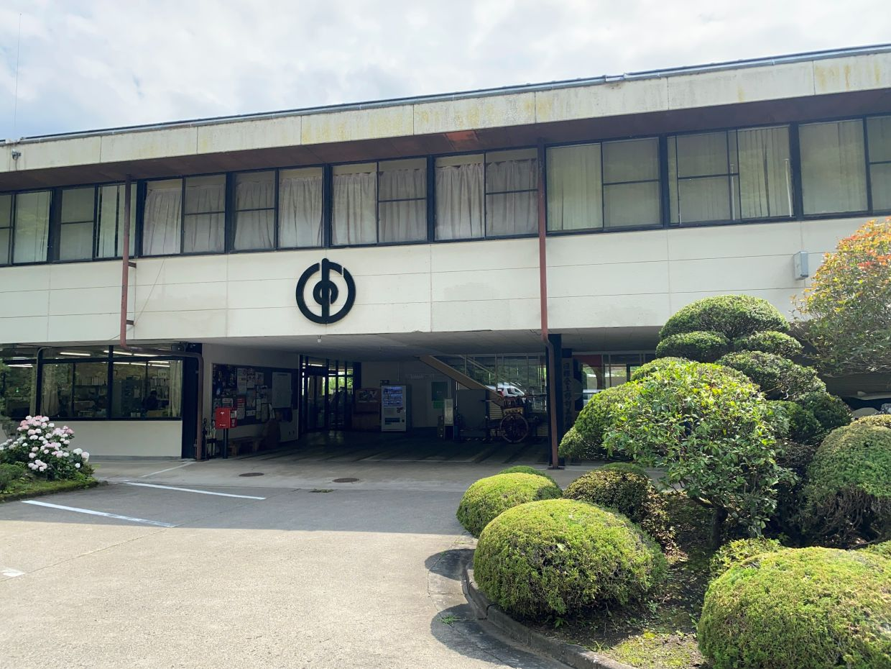
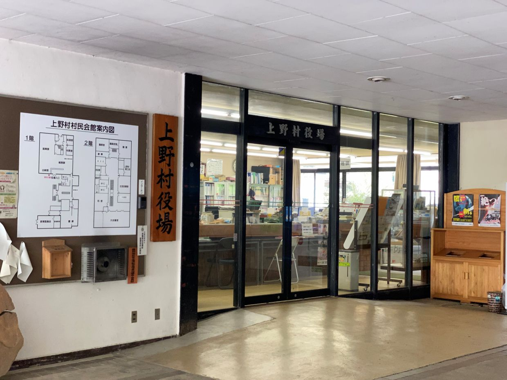
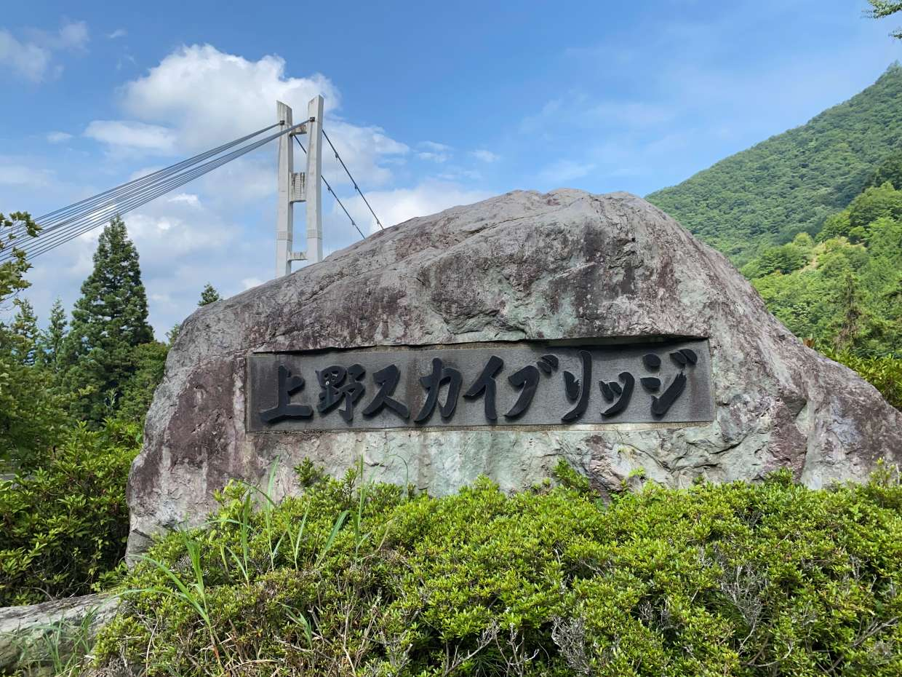
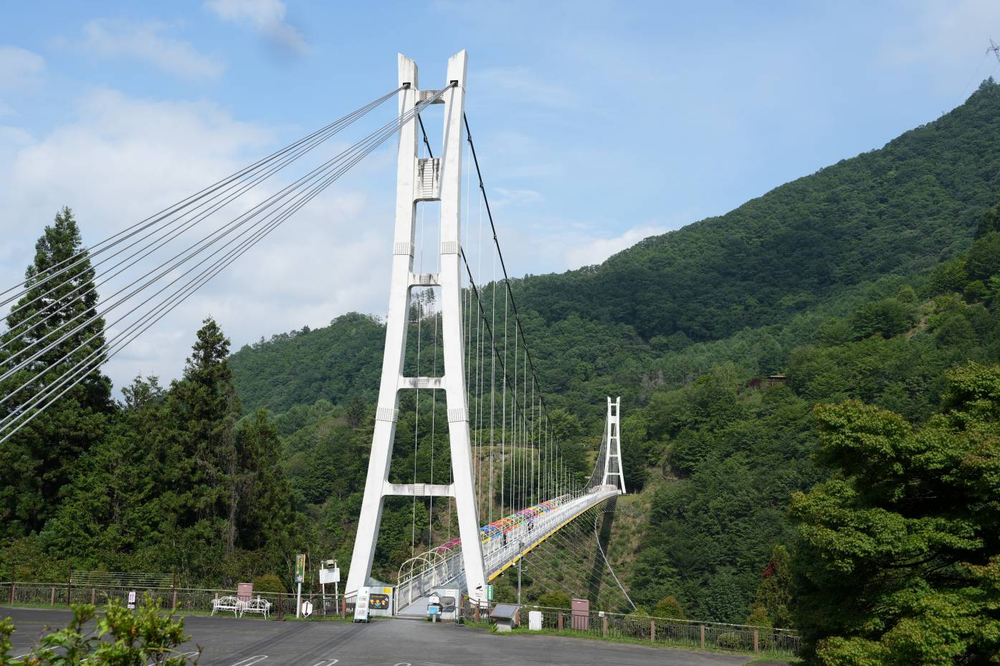

群馬県 上野村
役場


上野スカイブリッジ


上野村は御巣鷹があることで知られていますが、上野スカイブリッジのような観光スポットもあり、総じて満足度が高いと感じます。スカイブリッジは現物を視認してから向かいましたが、偶然にしてはかなり面白い場所であったのでおすすめです。




上野村は御巣鷹があることで知られていますが、上野スカイブリッジのような観光スポットもあり、総じて満足度が高いと感じます。スカイブリッジは現物を視認してから向かいましたが、偶然にしてはかなり面白い場所であったのでおすすめです。